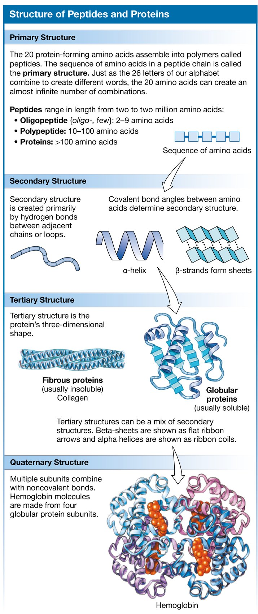

Week 2 · Lecture notes and transcript
The chemistry that does work in the body
These notes follow the lecture slide by slide. Each section names the slides it covers, so you can read it before the video, follow it during the video, or use it after to check what you remember. The six solved problems from the slides are written out in full here. Silverthorn chapter 2.
How to use this sheet
Pass one, before the video: read the section, then close the page and put what you can into the box for that competency on your note sheet. Pass two, after the video: come back in a different color and add what you missed. Try each solved problem yourself before you read the work. Getting it wrong first is how the method sticks.
The problem for today
Slides 1 to 2 of the deck
Last week you drew a control loop, and every box in it was a molecule doing a job. The sensor was a protein that changes shape when something binds it. The signal was a molecule that fits one receptor and nothing else. The effector was a protein that turns binding into work. So the question for this week is what gives a molecule its job, and the short answer is shape. The long answer is this lecture.
Here is the problem we are going to solve by the end. A patient's arterial pH falls from 7.40 to 7.10. Nothing in their DNA has changed and no enzyme has been destroyed. Yet enzymes all over the body have stopped working properly. Before you know any chemistry, make a guess: did the hydrogen ion concentration rise by about 4 percent, by about 30 percent, or did it roughly double? Write your guess down. Solved problem 4 answers it.
Atoms, electrons and ions
Slides 3 to 4 of the deck
An atom has three particles and only one of them does chemistry. Protons decide which element you have. Neutrons decide which isotope of that element you have. Electrons do everything else. Every bond, every ion, every stored packet of energy and every free radical in the body is a story about electrons.
Electrons have four jobs in physiology. Shared between two atoms they make a covalent bond. Gained or lost they make an ion. Pushed up into a higher orbital they hold energy, which is how ATP and NADH carry it around. Left unpaired they make a free radical, which is reactive and does damage.
An isotope has the same number of protons and a different number of neutrons. Chemically it behaves the same as the ordinary element, which is exactly why nuclear medicine works: the body takes up a radioactive isotope of iodine as if it were ordinary iodine, and the camera sees where it went. An ion is different. It has gained or lost electrons and now carries a charge, and charge changes what it can bind and where it can go. A hydrogen atom that loses its one electron is a bare proton, and that bare proton is the H+ that pH measures.
- Atomic number
- The number of protons. It decides which element the atom is.
- Isotope
- Same element, different number of neutrons. Same chemistry, different mass. Some isotopes are unstable and give off radiation.
- Ion
- An atom or molecule that has gained or lost electrons and carries a net charge.
- Cation
- A positive ion. It lost electrons. Na+, K+, Ca2+, H+, Mg2+.
- Anion
- A negative ion. It gained electrons. Cl-, HCO3-, phosphate, sulfate.
- Electrolyte
- A substance that separates into ions in water, so the solution conducts electricity.
- Free radical
- A molecule with an unpaired electron. Unstable and reactive. Relevant later to cell injury and to how radiation damages tissue.
- Trace element
- An element needed in tiny amounts, usually as a cofactor for a protein. Iron, iodine, zinc, copper.
Slide 7 of the deck
The ions on the short list below run most of physiology. Sodium sets the volume of the fluid outside cells. Potassium sets the resting voltage of every cell and decides whether the heart can fire. Calcium triggers contraction and secretion. Chloride is the main negative ion outside cells. Bicarbonate is the main buffer in blood. And hydrogen ion, present at a millionth the concentration of sodium, sets the shape of every protein in the body.
One fact from this section generates most of weeks 3, 4 and 5, so say it back to yourself now: a charged particle cannot cross the oily middle of a membrane on its own. Every ion that moves in the body moves through a protein.
| Ion | Typical plasma value | Where it matters |
|---|---|---|
| Sodium, Na+ | 135 to 145 mM | Extracellular fluid volume, membrane potential, most secondary active transport |
| Potassium, K+ | 3.5 to 5.0 mM | Resting membrane potential, cardiac excitability |
| Calcium, Ca2+ | 2.2 to 2.6 mM total | Muscle contraction, secretion, intracellular signaling |
| Chloride, Cl- | 98 to 107 mM | Main extracellular anion, inhibition in neurons, stomach acid |
| Bicarbonate, HCO3- | 22 to 26 mM | The principal buffer in blood |
| Hydrogen, H+ | about 40 nM | Sets pH, and therefore the shape of every protein |
Nursing
Potassium matters more than the other electrolytes because the heart's ability to fire depends on it.
Example: Potassium is replaced with monitoring and never pushed fast, because the margin between correcting it and causing an arrhythmia is small.
Radiologic technology
Ionizing radiation is named for exactly this. The beam knocks electrons off atoms in tissue and leaves charged particles behind.
Example: Most of that happens in water, because water is most of the tissue. The reactive fragments go on to damage DNA, and that chain is the reason dose limits and shielding exist.
Medicine
A charged particle cannot get through a membrane by itself. Every ion that moves needs a protein to go through.
Example: A drug that blocks one kind of channel can change the behavior of an entire organ.
Respiratory therapy
Electrolytes decide how hard a muscle can pull, and breathing is muscle work.
Example: Low potassium or low phosphate weakens the diaphragm, which shows up as a failed weaning trial rather than as breathlessness.
Bonds: strong ones build, weak ones interact
Slides 5 to 6 of the deck
A covalent bond is two atoms sharing a pair of electrons. It is strong, it takes real energy to make or break, and it is what holds a molecule together. If the two atoms share evenly the molecule is nonpolar, and molecules made mostly of carbon and hydrogen are like that. If one atom pulls the electrons harder the molecule is polar. Water is the polar molecule that matters. Its oxygen pulls the shared electrons toward itself, so the oxygen end is slightly negative and the two hydrogen ends are slightly positive.
The weak bonds are the ones physiology actually runs on. An ionic bond is the attraction between opposite charges. A hydrogen bond is a slightly positive hydrogen on one polar molecule being drawn to a slightly negative oxygen, nitrogen or fluorine on another. Van der Waals forces are fleeting attractions between any two atoms that get close enough. Each of these is feeble on its own. In bulk they give water its surface tension, hold the two strands of DNA together, and fold every protein in your body.
Here is why the weakness is the point. A hormone that bound its receptor with a covalent bond would never let go, and the signal could never be switched off. Every reversible interaction in the body, binding, recognition, folding and unfolding, uses weak bonds because weak bonds can be undone.

- Covalent bond
- Two atoms sharing a pair of electrons. Strong. Single, double and triple bonds share one, two or three pairs.
- Polar molecule
- Electrons shared unevenly, so one region is slightly negative and another slightly positive. Water.
- Nonpolar molecule
- Electrons shared evenly, no partial charges. Mostly carbon and hydrogen. Fats.
- Ionic bond
- Attraction between a positive and a negative ion. Breaks easily in water.
- Hydrogen bond
- A weak attraction between a partially positive hydrogen and a partially negative O, N or F on another molecule.
- Van der Waals forces
- Weak, nonspecific, short range attractions between atoms that are very close together.
Solved problem 1: the mass of a molecule
Slide 8 of the deck
Solved problem 1
Glucose is C6H12O6. Find its molecular mass, then do the same for table salt, NaCl.
Atomic masses: carbon 12, hydrogen 1, oxygen 16, sodium 23, chlorine 35.5, all in daltons. A dalton and an atomic mass unit are the same thing.
The work
- Count each element in the formula. Glucose has 6 carbons, 12 hydrogens and 6 oxygens.
- Multiply each count by its atomic mass. Carbon: 6 × 12 = 72. Hydrogen: 12 × 1 = 12. Oxygen: 6 × 16 = 96.
- Add them. 72 + 12 + 96 = 180 Da. One molecule of glucose weighs 180 daltons.
- Sodium chloride: 23 + 35.5 = 58.5 Da.
- The same numbers in grams give you one mole. 180 g of glucose is one mole of glucose molecules, and 58.5 g of NaCl is one mole of NaCl. Keep both numbers. They come back in problems 2 and 3.
Why moles matter
A mole is 6.02 × 1023 particles, and the molecular mass in grams is one mole of that substance. That is the bridge between weighing something, which a pharmacy can do, and counting molecules, which is what the body responds to. Equal masses of two different solutes are not equal numbers of molecules.
The four families of biological molecules
Slide 9 of the deck
Every biological molecule belongs to one of four families: carbohydrates, lipids, proteins and nucleotides. Most contain carbon, hydrogen and oxygen. Proteins and nucleotides add nitrogen, and nucleotides and phospholipids add phosphorus. The families also combine. A protein carrying a lipid is a lipoprotein, a protein or lipid carrying a sugar is a glycoprotein or glycolipid, and those sugar-tagged molecules on the outside of the cell are how cells recognize one another. Your blood type is a glycolipid.
Carbohydrates
Slides 10 to 11 of the deck
Sugars come single, paired and chained. The five carbon sugars ribose and deoxyribose build RNA and DNA. The six carbon sugars glucose, fructose and galactose are fuel, and glucose is the one the body regulates. Glucose and galactose are the same atoms with one hydroxyl group pointed the other way, and that single difference means they need different enzymes and different transporters. That is the first place this week shape decides how the body treats a molecule.
Two sugars joined make a disaccharide. Sucrose is glucose plus fructose, maltose is glucose plus glucose, lactose is galactose plus glucose, and each needs its own enzyme to split it. Many adults stop making lactase. The lactose stays in the gut, pulls water in after it and feeds the bacteria of the colon. The problem is not the sugar, it is a missing protein whose binding site fits that one shape.
Long chains of glucose are polysaccharides. Animals store glucose as glycogen, plants store it as starch, and cellulose is glucose too, but joined by a bond humans cannot digest, which is why it counts as fiber.
Lipids
Slides 12 to 13 of the deck
A fatty acid is a chain of carbons with a carboxyl group at one end. No double bonds is saturated, one is monounsaturated, two or more is polyunsaturated. A double bond puts a kink in the chain, kinked chains cannot pack tightly, and that is why unsaturated fats are liquid at room temperature and saturated fats are solid. Glycerol plus one, two or three fatty acids gives a mono, di or triglyceride, and more than 90 percent of the body's lipid is triglyceride.
Lipids are mostly carbon and hydrogen, so they are nonpolar and do not dissolve in water. That single fact is the whole reason they need carrier proteins to travel in blood. Three lipid relatives matter for signaling and structure. Eicosanoids are modified 20 carbon fatty acids made on demand from the membrane and acting nearby; prostaglandins are the familiar example, and aspirin works by blocking the enzyme that makes them. Steroids all start from cholesterol: cortisol, aldosterone, estrogen and testosterone are cholesterol with small edits, and because they are lipids they pass straight through membranes. Phospholipids are two fatty acids plus a phosphate head. The head loves water and the tails hate it, so in water they arrange themselves into a double layer with the tails hidden inside. That double layer is next week.
Proteins
Slides 14 to 16 of the deck
Twenty amino acids build human proteins, and nine of them are essential, meaning we cannot make them and must eat them. Every amino acid has an amino group, a carboxyl group, a hydrogen and one variable R group on the same carbon. The R group is the only thing that differs between the twenty, and it is where the personality lives: some are charged, some are polar, some are oily, one contains sulfur. Which R groups sit where decides how the chain folds.
A peptide bond joins the amino group of one amino acid to the carboxyl group of the next, releasing a water molecule. It is covalent, so a chain does not fall apart on its own. Two to nine amino acids is an oligopeptide, ten to a hundred is a polypeptide, and more than a hundred is a protein. Insulin has 51, so you will see it called both.
Proteins have four levels of structure. Primary is the order of amino acids, set by the gene and held by peptide bonds. Secondary is local folding into alpha helices and beta sheets, held by hydrogen bonds along the backbone. Tertiary is the full three dimensional shape, held by weak bonds between R groups and sometimes by a disulfide bridge between two cysteines. Fibrous proteins like collagen are insoluble; globular proteins dissolve. Quaternary is several folded chains held together by weak bonds, and hemoglobin is four.
Notice that only the primary structure is held by strong bonds. Everything above it is held by the weak bonds from earlier, and that is deliberate, because it lets a protein flex when something binds it. It also means heat, pH and salt can undo the fold without touching the chain. That is denaturation: the same amino acids in the wrong shape, with no function. Change the pH and you change which R groups carry a charge; change the charges and you change which ionic bonds hold. That is the mechanism behind the opening problem.

Nucleotides
Slide 17 of the deck
A nucleotide is one or more phosphate groups, a five carbon sugar and a nitrogen containing base. Purines, adenine and guanine, have two rings. Pyrimidines, cytosine, thymine and uracil, have one. Nucleotides do two jobs. Single nucleotides catch energy in high energy electrons or phosphate bonds and hand it on: ATP, ADP, NAD and FAD. cAMP carries messages inside cells. Chains of nucleotides carry information as DNA and RNA. In DNA the bases pair by hydrogen bonds, A with T through two bonds and G with C through three, and a purine always pairs with a pyrimidine so the two strands stay the same distance apart.
Functional groups
Slide 18 of the deck
A functional group is a small cluster of atoms that shows up over and over and moves between molecules as a unit. The amino group, NH2, accepts H+ and so acts as a base. The carboxyl group, COOH, gives up H+ and acts as an acid. The hydroxyl group, OH, is polar and hydrogen bonds with water, which is why sugars dissolve. The phosphate group is charged and holds energy in ATP.
Phosphate is also the on switch. Adding a phosphate to a protein adds two negative charges at that spot, the nearby R groups shift, the fold changes and the binding site changes shape. Kinases add phosphate and phosphatases remove it, and that pair turns proteins on and off in a huge fraction of cell signaling. You will meet it every week from here on.
- Monosaccharide
- A single sugar. Glucose, fructose, galactose, ribose, deoxyribose.
- Glycogen
- The storage form of glucose in animals, mostly in liver and muscle.
- Triglyceride
- Glycerol plus three fatty acids. The main storage form of fat.
- Phospholipid
- Two fatty acids plus a phosphate head. Amphipathic, and the building block of every membrane.
- Steroid
- A lipid built on four carbon rings, all derived from cholesterol.
- Peptide bond
- The covalent bond joining amino acids, formed with the loss of a water molecule.
- Denaturation
- Loss of a protein's shape, and therefore its function, by heat, pH or salt, without breaking the peptide bonds.
- Disulfide bond
- A covalent sulfur to sulfur link between two cysteines that helps hold a fold together.
- Purine and pyrimidine
- Two ring and one ring nitrogenous bases. In DNA a purine always pairs with a pyrimidine.
- Glycoprotein
- A protein with a sugar attached. Cell surface labels and blood types are glycoproteins and glycolipids.
Water, solutions and saying how much
Slides 19 to 21 of the deck
A solute is what dissolves, a solvent is what it dissolves in, and in the body the solvent is always water, so every body fluid is an aqueous solution. Hydrophilic molecules are polar or charged. Water surrounds them with a shell of its own molecules, and that hydration shell is what dissolving actually is. Hydrophobic molecules are nonpolar. Water has nothing to grab, so it pushes them together, and that is why oil beads up and why phospholipids line up with their heads in the water and their tails away from it.
Make the prediction from the slide before reading on. Two drugs are the same size, one hydrophilic and one hydrophobic. The hydrophobic one crosses a cell membrane easily, because the middle of the membrane is oily, but it needs a carrier protein to travel in blood. The hydrophilic one dissolves in plasma happily and crosses membranes with difficulty. Before you know anything else about a molecule, its polarity tells you where it can go and how it has to get there.
Molarity (M) = moles of solute ÷ liters of solution
Units: mol/L, written M. Body fluids are dilute, so values are usually mmol/L, written mM.
What it says: molarity counts particles, not mass. Equal masses of two solutes are not equal numbers of molecules, and it is the number of molecules that does the work.
Percent solution = grams of solute per 100 mL of solution
Units: g/100 mL. A 5 percent solution is 5 g in every 100 mL. Pharmacies and IV bags use this because they weigh solute, they do not count moles.
What it says: the same percent means different numbers of particles for different solutes, because their molecules weigh different amounts.
Equivalents (Eq) = moles × charge on the ion
Units: mEq/L for ions in blood. Na+ has 1 Eq per mole. Ca2+ has 2. HPO4 2- has 2.
What it says: one mole of calcium carries twice the charge of one mole of sodium. Body fluids must stay electrically neutral, so charge matters as much as particle count.
Two more units you will read on lab reports. A deciliter, dL, is 100 mL, and glucose, calcium and cholesterol are usually reported in mg/dL in the United States. And whenever a value looks strange, check the unit before you check the physiology. Solved problem 3 shows why.
- Solute
- What dissolves.
- Solvent
- What it dissolves in. In the body, water.
- Aqueous
- Water based. Every body fluid.
- Hydrophilic
- Dissolves readily in water. Polar or charged.
- Hydrophobic
- Does not dissolve in water. Nonpolar.
- Amphipathic
- One polar region and one nonpolar region in the same molecule. Phospholipids.
- Hydration shell
- The layer of water molecules that surrounds a dissolved ion or polar molecule.
- Concentration
- Amount of solute per volume of solution, in whatever unit the report uses.
Solved problems 2 and 3: the IV bags
Slides 22 to 23 of the deck
Solved problem 2
D5W is 5 percent dextrose (glucose) in water. (A) How many grams of glucose are in a 500 mL bag? (B) What is the molarity of D5W in mM? Glucose is 180 g per mole.
The work
- Part A. A 5 percent solution is 5 g in every 100 mL. A 500 mL bag is five of those. 5 × 5 g = 25 g of glucose, with water added until the total volume is 500 mL.
- Part B. Work with one liter. 5 g per 100 mL is 50 g per 1000 mL, so 50 g/L.
- Convert grams to moles. 50 g ÷ 180 g/mol = 0.278 mol.
- That is 0.278 mol in one liter, so 0.278 M, which is 278 mM.
- Why it matters: body fluids sit near 280 to 300 milliosmoles per liter, and D5W was designed to land close to that so the bag does not shrink or swell the red cells it meets. The pharmacy label reads 252 mOsm/L rather than 278 because the dextrose in the bag is the monohydrate form, 198 g per mole. Same reasoning, slightly heavier molecule. Next week you will see what happens once the glucose is taken up and only water is left.
Solved problem 3
Normal saline is 0.9 percent NaCl. NaCl is 58.5 g per mole and separates completely into Na+ and Cl- in water. (A) Sodium concentration in mM? (B) In mEq/L? (C) Plasma calcium is 2.5 mmol/L. Calcium is Ca2+ and weighs 40 g per mole. Give it in mEq/L and in mg/dL.
The work
- Part A. 0.9 percent is 0.9 g per 100 mL, so 9 g per liter. 9 g ÷ 58.5 g/mol = 0.154 mol/L. Every NaCl gives one Na+, so sodium is 154 mM, and chloride is 154 mM as well.
- Part B. Sodium carries one charge, so equivalents equal moles. 154 mEq/L. Plasma is about 140 mEq/L, so saline is a little saltier than you are.
- Part C, equivalents. Calcium carries two charges. 2.5 mmol/L × 2 = 5 mEq/L.
- Part C, mass. 2.5 mmol/L × 40 mg/mmol = 100 mg/L. A deciliter is a tenth of a liter, so 10 mg/dL, which is the number you see on a metabolic panel.
- The lesson: the same calcium reads 2.5, 5 or 10 depending on the unit. Check the unit before you check the physiology.
pH: a narrow window, defended hard
Slides 24 to 25 of the deck
An acid gives up H+ in water; the carboxyl group does this. A base takes H+ out of solution, either by binding it directly, as ammonia does, or by releasing OH- that combines with H+ to make water, as sodium hydroxide does. pH is a way of writing the hydrogen ion concentration so the numbers are manageable. Pure water has 1 × 10-7 M of H+, which is pH 7.
The scale runs 0 to 14 and each step is ten times the hydrogen ion concentration of the step above. That is the part people miss. From pH 8 to pH 6 is not twice the acid, it is a hundred times the acid. Arterial blood is held at 7.35 to 7.45. Inside most cells is a little lower, about 7.0 to 7.2. Stomach contents sit near 1 to 3, and urine can swing from about 4.5 to 8, because the kidney uses urine to dump whatever acid or base the blood needs to lose. A blood pH below 7.00 or above 7.70 is not compatible with life.
The body defends pH this hard because free H+ can join in hydrogen bonds and ionic bonds. Enough of it changes which R groups on a protein carry a charge, the weak bonds holding the fold shift, the binding site changes shape and the protein works worse or not at all. A buffer is anything that soaks up H+ when there is too much and releases it when there is too little. Proteins buffer, phosphate buffers, and bicarbonate is the big one in blood. You build the bicarbonate system properly in week 13.

pH = −log [H+]
The log is the point. Square brackets mean concentration. A drop of one pH unit is a tenfold rise in hydrogen ion concentration, and a drop of 0.3 is a doubling.
What it says: pH runs backwards. More acid means a lower number, and small changes in the number are large changes in the acid.
[H+] = 10−pH
The same equation turned around. Use it to get from the pH on a blood gas report back to a concentration.
What it says: normal arterial [H+] is about 40 nanomolar. A millionth of the sodium concentration, and defended more tightly than anything else in the body.
Slide 26 of the deck
Solved problem 4
Use pH = −log [H+] and [H+] = 10−pH. (A) A solution has [H+] = 1 × 10−7 M. What is its pH? (B) Normal arterial [H+] is 40 nM, which is 4 × 10−8 M. Show that this gives pH 7.40. (C) Our patient dropped to pH 7.10. What is their [H+] now, and how many times higher is it than yesterday?
The work
- Part A. pH = −log(10−7). The log of 10 to a power is the power, so log(10−7) = −7, and the minus sign in front makes it pH 7.
- Part B. Split 4 × 10−8 into two logs: log(4) + log(10−8) = 0.60 + (−8) = −7.40. Flip the sign: pH 7.40. Worth memorizing: 40 nM is 7.40.
- Part C. [H+] = 10−7.10. Write it as 100.90 × 10−8. 100.90 is about 7.9, so [H+] is about 79 nM.
- 79 ÷ 40 is close to 2. The acid roughly doubled. A change of 0.30 on the pH scale is always a factor of 2, because log(2) is 0.30.
- That answers the opening problem. The pH moved by a number that looks small, the hydrogen ion concentration doubled, and doubling the free protons is enough to change which R groups are charged on proteins throughout the body.
- Acid
- A molecule that releases H+ in solution.
- Base
- A molecule that removes H+ from solution, directly or by releasing OH-.
- pH
- The negative log of the hydrogen ion concentration. Lower is more acid, and each unit is a factor of ten.
- Buffer
- A molecule or pair of molecules that binds H+ when there is too much and releases it when there is too little, so pH changes less than it otherwise would.
- Acidosis
- Arterial pH below 7.35. Alkalosis is above 7.45. Both are week 13 and week 15.
- Bicarbonate, HCO3-
- The main buffer in blood, produced from carbon dioxide and water, and the link between the lungs and the kidneys in pH control.
Nursing
The first sign of an acid problem is often how the person is acting, not a number on a report.
Example: New confusion or agitation can arrive before anyone has drawn a blood gas.
Radiologic technology
The body holds its pH in a very narrow window, so anything you inject has to be mixed to match it.
Example: Modern low osmolar contrast agents are tolerated better than the old ones because their chemistry sits closer to what the blood already is.
Medicine
A pH change that looks tiny is not tiny. Every whole step on the scale is ten times more acid.
Example: Falling from 7.4 to 7.1 roughly doubles the hydrogen ion concentration, which is enough to change protein shape throughout the body.
Respiratory therapy
Reading acid and base status is the main skill of the entire specialty.
Example: Ventilation is the fast lever on pH, so a change in minute ventilation moves the pH within minutes, not hours.
Proteins at work: binding is the mechanism under all of it
Slides 27 to 29 of the deck
Proteins do nine kinds of job: enzymes, membrane transporters, signal molecules, receptors, binding proteins, immunoglobulins, motor proteins, structural proteins and regulatory proteins. Underneath, every one of them works the same way. Something binds, the protein changes shape, and the shape change does the job. The rest of the lecture is that one mechanism.
A ligand is anything that binds a protein: a substrate, a hormone, a drug, an ion. Specificity means a protein binds one ligand or a small family of very similar ones, because the binding site and the ligand have to be complementary in shape and charge. Neither side is rigid. Binding pulls the site into its working shape, which is called induced fit, and it is how binding can switch a protein on. Isoforms are closely related proteins that do the same job with different affinity, often in different tissues; fetal hemoglobin grips oxygen harder than the adult form. Two ligands that fit the same site compete for it. An agonist switches the protein on. An antagonist sits in the site and blocks it.
Affinity is how strongly a protein holds its ligand. Binding is reversible, so at any moment some pairs are forming and some are coming apart. At equilibrium the two rates are equal and the ratio of bound to unbound is constant. That ratio is the equilibrium constant, and the law of mass action says that if you push the concentration of anything on one side, the reaction runs toward the other side until the ratio is restored.
P + L ⇌ PL Keq = [PL] ÷ ([P][L])
P free protein, L free ligand, PL the bound pair. Keq is the equilibrium constant.
What it says: a larger Keq means a higher affinity. More of the mix is sitting bound at any moment.
Kd = [P][L] ÷ [PL] = 1 ÷ Keq
The dissociation constant. Numerically it is the ligand concentration at which half the protein is bound.
What it says: a smaller Kd means a tighter grip. A drug with a Kd of 1 nM works at very low concentration.

Slide 30 of the deck
Solved problem 5
A drug binds receptor A with a Kd of 1 nM and receptor B with a Kd of 100 nM. Plasma drug concentration is 10 nM. (A) Which receptor has the higher affinity? (B) What fraction of each is occupied? Use fraction bound = [L] ÷ ([L] + Kd). (C) The dose is raised so plasma hits 100 nM. What happens to each?
The work
- Part A. Smaller Kd is tighter binding. Receptor A, with a Kd of 1 nM, holds the drug 100 times more tightly than receptor B.
- Part B, receptor A. 10 ÷ (10 + 1) = 10 ÷ 11 = 0.91. About 91 percent of receptor A is occupied.
- Part B, receptor B. 10 ÷ (10 + 100) = 10 ÷ 110 = 0.09. About 9 percent of receptor B is occupied.
- Part C. At 100 nM, receptor A: 100 ÷ 101 = 0.99, essentially full and barely changed. Receptor B: 100 ÷ 200 = 0.50, half full, up from 9 percent.
- This is the logic of a therapeutic window. At the low dose the drug is almost entirely on its target. Raise the dose and the target gains almost nothing while the off target receptor starts to fill. Side effects arrive not because the drug changed, but because mass action moved.
Slide 31 of the deck
Predict: hemoglobin at the muscle
In the lung, hemoglobin sits in equilibrium with oxygen: Hb + O2 ⇌ HbO2. Blood now arrives at a working muscle where free oxygen is much lower. Using nothing but mass action, which way does the reaction run? Lower free oxygen means the ratio [HbO2] ÷ ([Hb][O2]) is now larger than Keq, so the reaction runs in reverse. HbO2 comes apart and releases oxygen until the ratio is restored. The muscle gets oxygen for no other reason than that it used some. No signal, no controller, just mass action. Week 13 adds why the curve is S shaped, but the direction is already decided here.
- Ligand
- Anything that binds to a protein.
- Binding site
- The region of a protein whose shape and charge are complementary to its ligand.
- Specificity
- A protein binding one ligand or a small family of closely related ones.
- Induced fit
- The binding site and ligand adjusting to each other as they meet, so binding itself changes the protein's shape.
- Affinity
- How strongly a protein holds its ligand. High affinity means a small Kd.
- Isoform
- A closely related version of a protein with the same job and a different affinity, often in a different tissue.
- Agonist and antagonist
- An agonist binds and switches the protein on. An antagonist binds the same site and blocks it.
- Law of mass action
- Push the concentration on one side of a reversible reaction and it runs toward the other side until the equilibrium ratio is restored.
Turning proteins on, off, up and down
Slides 32 to 33 of the deck
There are three ways to switch a protein on. Cut it: proteolytic activation makes the protein in an inactive form and removes a piece to switch it on, which is how digestive enzymes and clotting factors work, and it is why a digestive enzyme does not digest the cell that made it. Give it a cofactor: the binding site does not work until an ion or a small organic molecule sits in it, and many trace minerals and B vitamins are cofactors. Or bind a modulator at a second site: the word allosteric means other site, and an allosteric activator binds away from the working site, shifts the fold and makes the site usable.
There are two ways to switch a protein off. A competitive inhibitor sits in the binding site itself, and it is beaten by adding more ligand because the two compete for the same spot. An allosteric inhibitor binds elsewhere and deforms the binding site, and more ligand does not help, because the site is the problem. Reversible modulators use weak bonds and let go. Irreversible ones bind covalently and the protein is done until the cell makes a new one. Aspirin inhibits its enzyme irreversibly, which is why one dose affects a platelet for the rest of that platelet's life.
Carbon monoxide is the competitive inhibitor to remember. It binds the same site on hemoglobin that oxygen does and holds it about 200 times more tightly. The treatment follows from mass action: flood the patient with 100 percent oxygen, sometimes at high pressure, so oxygen finally outnumbers the CO at the site.
Slides 34 to 35 of the deck
Warm a protein and its molecules collide more often, so activity rises. Keep warming and the weak bonds holding the fold start to break, and around 50 °C (122 °F) the protein in figure 2.13a has unfolded completely. pH does the same thing by a different route, by changing which R groups are charged. A mildly disturbed protein can refold when conditions return. A badly denatured one usually cannot. A cooked egg white does not become clear again. From the figure question: the protein is more active at 30 °C (86 °F) than at 48 °C (118 °F), because 48 °C is on the collapsing side of the curve, and a fever of 41 °C (105.8 °F) sits just past the peak, pulling activity down.
The cell also changes how many copies of a protein it has. With ligand held constant, rate rises in a straight line with the amount of protein, so up-regulation, making more copies or breaking down fewer, makes a cell more sensitive to a signal, and down-regulation does the reverse, over hours to days. With protein held constant, rate rises with ligand and then flattens. At saturation every binding site is busy, adding more ligand does nothing, and the only way to go faster is more protein.


Slide 36 of the deck
Solved problem 6
Use figure 2.13b and c. (A) On the protein graph, what is the rate when protein concentration is A? At what protein concentration is the rate 2.5 mg/sec? (B) On the ligand graph, what is the rate at 200 mg/mL? (C) A patient's kidney reabsorbs glucose with a transporter. Blood glucose rises from 5 mM to 20 mM and glucose starts appearing in the urine. Which graph explains it, and what is the bottleneck?
The work
- Part A. At protein concentration A the line reads 1 mg/sec. Follow 2.5 mg/sec across to the line and drop down: it lands at C. Rate is proportional to the amount of protein, so two and a half times the protein gives two and a half times the rate.
- Part B. 200 mg/mL is past the bend. The curve flattened at about 100 mg/mL and stays at 4 mg/sec. Doubling the ligand changed nothing, because every site was already busy.
- Part C. This is the ligand graph. The kidney transporters are the protein and glucose is the ligand. At 5 mM they keep up and every glucose is reclaimed. At 20 mM they are saturated, the extra glucose has nowhere to bind, so it stays in the filtrate and leaves in the urine.
- The bottleneck is the number of transporters, not the amount of glucose. Giving the kidney more time does not help. The only fix is on the protein side: fewer glucose molecules arriving, or more transporters made.
- The rule: when a response stops increasing even though the input keeps rising, look for a saturated protein.
- Proteolytic activation
- Switching a protein on by cutting a piece off it.
- Cofactor
- An ion or small organic molecule that must sit in the binding site before the protein works.
- Allosteric
- Binding at a site other than the working site, changing the fold. Can activate or inhibit.
- Competitive inhibitor
- Blocks the binding site itself. Overcome by adding more ligand.
- Up-regulation and down-regulation
- A cell making more or fewer copies of a protein, changing how sensitive it is to a signal.
- Saturation
- Every binding site busy. Rate has hit its ceiling and only more protein raises it.
The patient, explained start to finish
Slide 37 of the deck
Write the chain yourself before you read this one. Every arrow has to be something from this lecture.
- pH fell by 0.30, so free H+ roughly doubled, from about 40 nM to about 79 nM. Solved problem 4.
- Extra H+ binds to R groups that can accept it, amino groups especially. Charges that were negative or neutral become neutral or positive.
- The ionic bonds and hydrogen bonds that hold the tertiary fold depend on those charges. Some break, some form where they should not.
- The fold shifts, so the binding site shifts. Complementarity with the ligand drops, and with it affinity.
- Lower affinity means less protein sits in the bound state at the same ligand concentration, so the rate of every reaction that protein runs falls. Mass action.
- Now perturb it. The patient also has a fever of 40 °C (104 °F). On the curve in figure 2.13a, that is just past the peak and sliding toward denaturation, so the fever pushes on the same weak bonds and makes the shape problem worse, not better. Two perturbations, one mechanism.
Say it in one sentence
Everything a protein does depends on its shape, its shape is held by weak bonds, and weak bonds are at the mercy of temperature, pH and what is bound nearby. That is why the body defends its internal conditions as hard as it does.
What this week assumes you already have
If any line here is shaky, fix it before you work the week rather than after. The three review pages are linked from each card.
Chemistry
- Atoms, elements and the periodic table at the level of protons, neutrons and electrons
- What a chemical formula like C6H12O6 tells you
- Acids and bases at the level of giving and taking H+
- What a log is, and that pH uses one
Anatomy
- The cell has a membrane, and a membrane separates inside from outside
- Blood carries dissolved substances around the body
This is a physiology course, so anatomy shows up only where you need it to follow a mechanism. Two items is the whole list for this week, and that is not an oversight.
Math
- Metric prefixes: milli, micro, nano, deci
- Percent, and moving between g/100 mL and g/L
- Dividing by a molar mass to get moles
- Reading a value off a graph and following it to the axis
- Powers of ten and what a log does to them
Close the page and produce it
These are the 4 competencies this lecture covers, straight off the study guide, with the two prompts that go with each one. Week 2 has three more, ATP and energy coupling, ATP production pathways, and the enzyme assay. Those are on the week 2 page and in the lab, not in this recording. Pick one prompt per competency. Blank paper, nothing open.
Read the full instructions first, including how the first pass before the lecture differs from the second pass after it.
Water and solution properties
Explain how the polarity and hydrogen bonding of water determine solubility and identify whether a given solute is hydrophilic or hydrophobic.
Do one of the two. Head your paper with the number.
1-1
Draw a water molecule and label the partial charges on it. Beside it draw one thing that dissolves in body water and one thing that does not, and write one sentence under each saying why. Then write what the body has to do for the one that does not dissolve.
1-2
Draw a blood vessel in cross section. Show one substance traveling free in the plasma and one traveling bound to a carrier protein. Label both, and write what decides which way a substance has to travel.
pH and buffers
Define pH, state the normal pH range of arterial blood, and explain how a buffer pair resists a change in pH when acid or base is added.
Do one of the two. Head your paper with the number.
2-1
Write the bicarbonate buffer equation from memory. Draw an arrow showing which way it shifts when acid is added and mark what happens to bicarbonate. Then write what the lung does to this equation and what the kidney does, and how fast each one works.
2-2
Draw the pH scale from 6.8 to 7.8. Mark the normal arterial range, mark which end is acidemia and which is alkalemia, and mark the survival limits. Under it write the equation for pH, and show with the numbers from solved problem 4 that 40 nM of hydrogen ion gives 7.40.
Protein structure and function
Relate the levels of protein structure to binding site shape and explain how denaturation by heat or pH change destroys function.
Do one of the two. Head your paper with the number.
3-1
Draw the four levels of protein structure as four small sketches in order and label each one. On the tertiary sketch mark where the binding site is, and write one sentence saying why the shape is the job rather than a consequence of the job.
3-2
Draw a folded protein with its binding site. Then draw it again after heat, and again after a pH change. Label what happened to the fold each time, and write what the protein can no longer do and whether it can recover.
Enzyme activity and regulation
Describe how enzymes lower activation energy and predict the effect of substrate concentration, temperature, pH, and competitive or allosteric inhibition on reaction rate.
Do one of the two. Head your paper with the number.
4-1
Draw rate against substrate concentration and label where saturation begins. Then draw the same axes twice more, once with a competitive inhibitor added and once with an allosteric one. Beside each, write what happened to the maximum rate and whether adding more substrate helps.
4-2
Draw rate against temperature, and rate against pH, on separate axes. Mark the optimum on each. Beside each curve write what is happening on the way up and what is happening on the way down, and say which side of the peak can be reversed and which cannot.
Dr. Sharilyn Rennie · BIO 005 Human Physiology · The chemistry that does work in the body. Values given are typical teaching figures, not laboratory reference ranges. Figures © Pearson Education, Silverthorn Human Physiology 9e, used under the instructor license for this course.